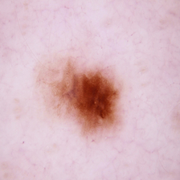
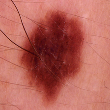
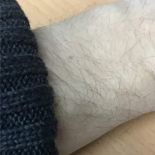

nevus.ai
La primera herramienta online que utiliza inteligencia artificial
para detectar posibles melanomas en fotografías de lunares.
Antes de empezar
Para hacer una comprobación, realice una fotografía de un lunar sospechoso a una distancia
de no más de 3 cm, y suminístrela al sistema pulsando en el botón que aparece en la parte superior.
Las imágenes comprobadas no son almacenadas en ningún momento.


